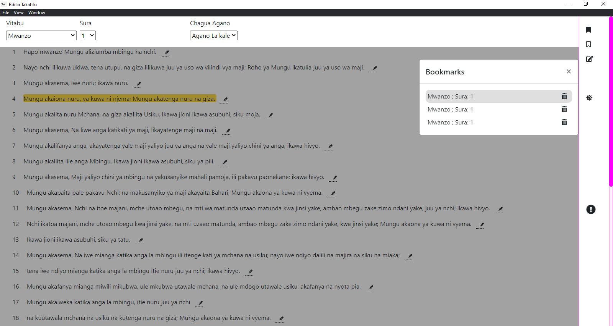

Swahili Bible
Download
Squize Your Self Closer To GOD
Swahili Bible provides you with great features to assist you on your reading.
A free
open source
Desktop application
Night Mode
Night mode feature provides eye comfort, especialy at night
Highlight
Highlight, to keep track on important words

Bookmark
Mark importannt verses for later reading
Note book
Take notes and read them later
Note Lists
Access All Notes taken.
Read View
Read your Notes
Currently available for windows and Linux
Windows
Linux
debian
Linux(Ubuntu)
Copy
sudo snap install swahili-bible